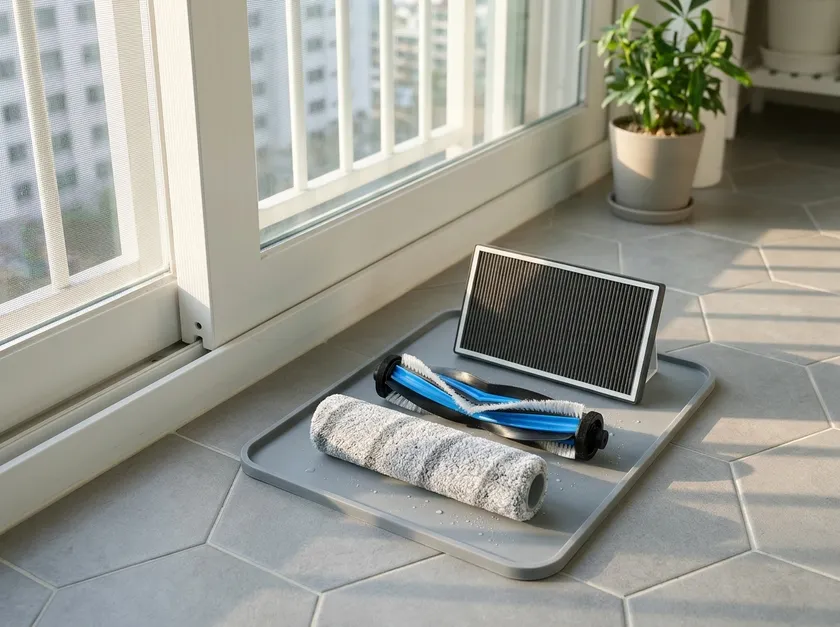
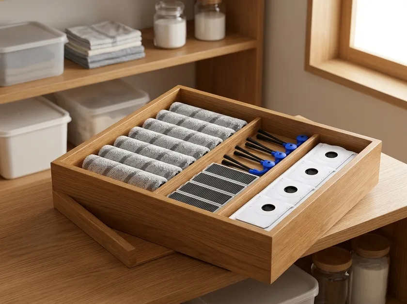

에코백스 (ECOVACS)
에코백스 디봇 X11 프로 옴니 1년 세트 구성과 롤러 물걸레·브러시 관리법
글·구성: 제이상점 · 기종별 1:1 호환 실물 점검 · 교체 주기 비교표 · 스마트스토어 패키지 안내

핵심 관리 · 선택 체크포인트
- 바닥을 일정한 압력으로 닦아내는 원통형 롤러 물걸레 기종은 롤러 파일의 탄성과 측면 체결 캡 상태를 주기적으로 살펴보면 닦임 품질을 오래 유지할 수 있습니다.
- 원통형 롤러 물걸레와 청·흑 V자 메인브러시 규격 확인: X11 프로 옴니는 줄무늬 텍스처가 들어간 원통형 롤러 물걸레와 파란색·검은색 V자 배열 메인브러시, 곡선형 사이드브러시를 사용합니다.
- 1년 패키지 구성품과 기종별 옵션 확인표: 주문 전 보유 기종이 에코백스 디봇 X11 프로 옴니인지 확인하고 세제 포함 여부 옵션을 선택해 보세요.
- 수납 박스 부품 분류와 다용도실 세정액 보관 동선: 원목 수납 박스에 여분 롤러 물걸레와 더스트백, 필터를 칸별로 나누어 담고, 1L 원통형 전용 세정제는 스테이션 옆 선반에 세워 두면 리필과 부품 교체를 한 자리에서 마칠 수 있습니다.
- 바닥 청소용 DEEBOT 세정제를 구별하는 기준은 에코백스 DEEBOT과 WINBOT 세제 구분법에서, 기종별 세제 투입 안내를 확인하는 방법은 에코백스 설명서 모델·지역 확인법에서 살펴보실 수 있습니다.
실물 부품 디테일 · 관리 구성 이미지




부품 규격 · 점검 기준표
| 확인 항목 | 부품·옵션 특징 | 점검·선택 포인트 |
|---|---|---|
| 원통형 롤러 물걸레 | 줄무늬 극세사 원통형 롤러 패드 | 내부 플라스틱 코어와 극세사 결 상태를 확인하며 교대 건조 |
| V자 메인브러시·사이드브러시 | 청·흑 V자 브러시 + 곡선형 사이드브러시 | 회전축 머리카락 제거 및 솔 벌어짐 점검 |
| 헤파필터·더스트백·전용 세제 | 다크그레이 필터 + 슬라이딩 칼라 봉투 + 1L 클리너 | 필터 완전 건조 후 장착 및 DEEBOT 전용 세정액 보충 |
💡 교체 주기가 겹치는 필터·브러시·물걸레·더스트백은 단품 배송비를 여러 번 내기보다 에코백스 X11 프로 옴니 기간별 세트(3개월·6개월·1년)로 미리 구비해 두면 물세척 후 24시간 교대 건조까지 끊김 없이 관리할 수 있습니다.
자주 묻는 질문 (FAQ)
Q. 에코백스 디봇 X11 프로의 원통형 롤러 물걸레 규격과 관리 기준은 무엇인가요?
A. 줄무늬 극세사 원통형 롤러 패드 규격을 사용하며, 내부 플라스틱 코어와 극세사 결 상태를 확인하며 교대 건조 기준으로 점검·교체하면 청소 효율을 안정적으로 유지할 수 있습니다.
Q. 에코백스 디봇 X11 프로의 V자 메인브러시·사이드브러시 규격과 관리 기준은 무엇인가요?
A. 청·흑 V자 브러시 + 곡선형 사이드브러시 규격을 사용하며, 회전축 머리카락 제거 및 솔 벌어짐 점검 기준으로 점검·교체하면 청소 효율을 안정적으로 유지할 수 있습니다.
Q. 에코백스 디봇 X11 프로의 헤파필터·더스트백·전용 세제 규격과 관리 기준은 무엇인가요?
A. 다크그레이 필터 + 슬라이딩 칼라 봉투 + 1L 클리너 규격을 사용하며, 필터 완전 건조 후 장착 및 DEEBOT 전용 세정액 보충 기준으로 점검·교체하면 청소 효율을 안정적으로 유지할 수 있습니다.
제이상점 1:1 검수 추천 패키지 · 구매 안내
메인 추천 구성
대표 구성 참고가 59,100원대 (옵션·쿠폰별 스마트스토어 결제 화면 기준)
1년 세트 (세제 미포함)6개월 세트 (세제 미포함)3개월 세트 (세제 미포함)
☑️ 주문 전 확인해 두면 좋은 제이상점 안심 포인트
· 기종별 1:1 전용 규격 검수: 모델명·연식에 맞는 호환·정품 구성을 검수해 오주문 불안을 줄였습니다.
· 해외직배송 미리 주문 팁: 중국 구매대행·해외직배송 상품이므로 마지막 여분 1개를 꺼내 쓰는 시점에 개인통관고유부호와 함께 여유 있게 주문해 두시면 훨씬 경제적인 비용으로 끊김 없이 교체하실 수 있습니다.
· 기종별 1:1 전용 규격 검수: 모델명·연식에 맞는 호환·정품 구성을 검수해 오주문 불안을 줄였습니다.
· 해외직배송 미리 주문 팁: 중국 구매대행·해외직배송 상품이므로 마지막 여분 1개를 꺼내 쓰는 시점에 개인통관고유부호와 함께 여유 있게 주문해 두시면 훨씬 경제적인 비용으로 끊김 없이 교체하실 수 있습니다.
📖 더 많은 가정 내 사용 스토리와 상세 후기가 궁금하시다면
📱 네이버 블로그 모바일 원문 보기 ↗